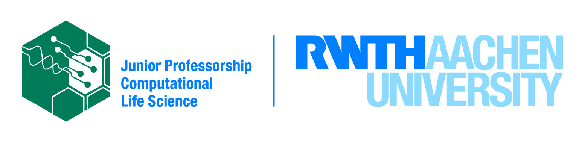

Github group of the computational photobiology lab at RWTH Aachen led by Prof. Dr. Anna Matuszyńska.
You can us at the RWTH website and our github page.
Software packages
-
MxlPy
Build and analyse mechanistic learning models in minutes
-
absorpig
Extract pigment composition from absorption spectra of photosynthetic organisms
-
Photosynthesis in silico
An interactive dashboard to study photosynthesis using computational models.
Projects and publications
-
mathematical model of synechocystis sp. PCC 6803
Some very nice descripton of this work
-
mRNA turnover kinetics
Some very nice descripton of this work
Hackathons
-
Embu Hackathon 2023
Material for the 2023 Hackathon Workshop on Computational Modeling to Unleash the Computational Power of Young African Researchers in Embu, Kenya.
Lab members
- Prof. Dr. Anna Matuszyńska

- Dr. Tim Nies
- Dr. Marvin van Aalst
- Tobias Pfennig
- Tanvir Hassan
- Quang Huy Nguyen
- Josha Ebeling
- Elouën Corvest
- Veena Lohiya
Alumni
- Fariha Mostafa
- Andreas Nakielski
- Chloe Aujoulat
- Abdulmalik Omeiza Abdulkabir
- Elena Kullmann
- Anastasiia Boshtova
- Sarah Philipps
- Pia Falter
- Theresa Zimmermann
- Dorina von Oehsen